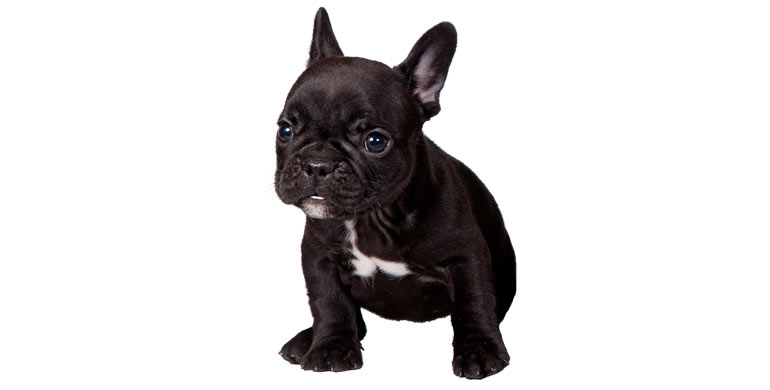
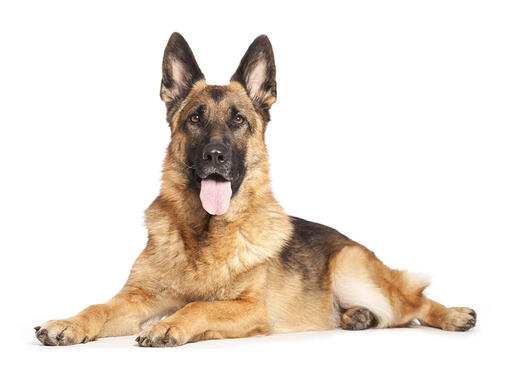

Golden Retriever

El Golden Retriever es conocido por su naturaleza amigable y obediente. Son perros inteligentes y se llevan bien con niños y otras mascotas.
Bulldog Francés
Los Bulldogs Franceses son perros pequeños y compactos con orejas grandes y una personalidad encantadora. Son ideales para viviendas más pequeñas.
Pastor Alemán
Los Pastores Alemanes son conocidos por su inteligencia y habilidades en el trabajo. Son perros leales y protectores, a menudo utilizados en roles de servicio.
Poodle

Los Poodles son conocidos por su inteligencia y elegancia. Vienen en diferentes tamaños y son adecuados como mascotas y compañeros cariñosos.